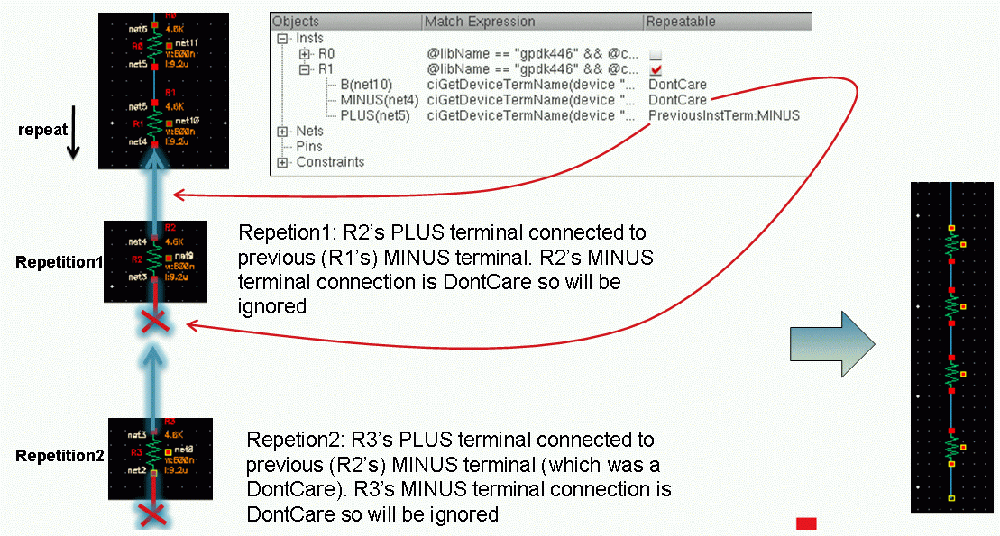
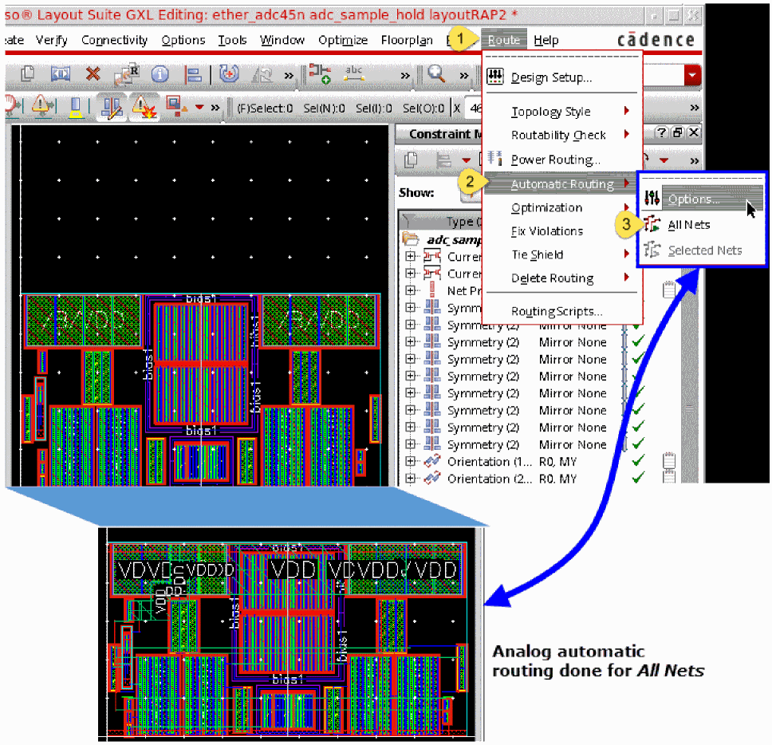
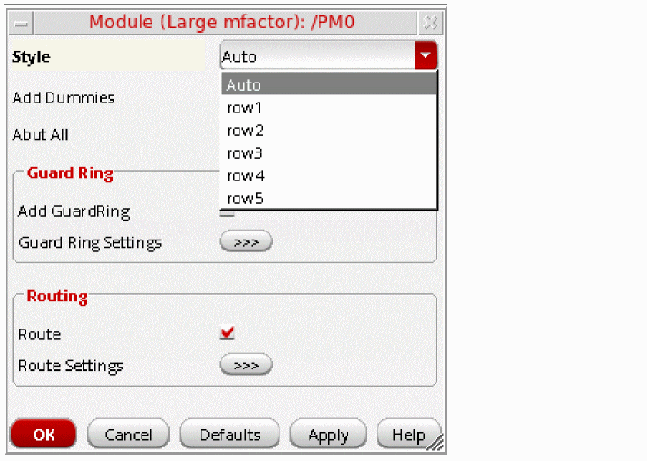

2
The Circuit Prospector Assistant
An Introduction to the Circuit Prospector Assistant
The Circuit Prospector assistant can be used to detect circuit structures, devices and nets based on certain criteria, and optionally apply a default set of constraints to them. It can also be used to set properties, or to visualize various groups of objects; acting as an additional search facility. Moreover, it can also be used for debugging, and to also apply specific actions to selected results.
In general, designers will want to apply a set of constraints to common circuit structures, related devices (such as same size, area, or type), devices with particular characteristics/connectivity, or symmetrical devices/nets/pins with particular properties.
However, performing this task manually and repetitively for multiple designs can be time consuming and error prone. As an aid to this task, the Circuit Prospector Assistant provides a flexible framework for capturing the information that a designer is looking for, locating structures and devices, and applying appropriate constraints to them, and consequently greatly accelerating the constraints entry process.
The Circuit Prospector provides a set of common structure finders that can be modified by the users to suit their design needs. Users can also create their own finders or capture any structure in the design and save it as a custom finder. The finders are grouped together in 'Categories' that can be customized as well. (See Creating and Editing Categories and Creating Finders).
Iterators are SKILL functions that analyze cellview devices, nets, and pins in a variety of ways, for example, you can iterate all selected objects, instances, or symmetrical devices.
Motivation
The following are some of the reasons why the Circuit Prospector is an essential tool for facilitating quick constraint entry:
- Most design tools are constraint driven.
- Analog circuits require a large number of constraints on devices and nets. The number of constraints is further on the rise with increasing process and design complexity.
- Entering constraints manually is time consuming and error prone.
The Circuit Prospector can help accelerate the constraint entry process significantly by retrieving and automatically grouping all design objects by common criteria, visualizing them, and suggesting relevant and corresponding constraints or properties.
Storage
All user-defined or modified Finders, Structures, Iterators and Constraint Generators are stored in your local .cadence/dfII/ci directory. The Cadence File Search mechanism is used to locate all .cadence directories and all finders, structures, iterators, and generators are loaded as they are found.
The files in your local .cadence directory are, by default, the last to be loaded and can override any finders, structures, iterators and generators that have been defined in other .cadence directories.
Accessing the Circuit Prospector
You can access the dockable Circuit Prospector assistant by either:
- Selecting Window – Assistants – Circuit Prospector.
- Selecting Window – Workspaces – Constraint-Helper.
- Selecting Circuit Prospector from the menu bar/toolbars context-sensitive menu.
-
Selecting the Constraint-Helper workspace from the Workspace Configuration pull-down menu on the toolbar.
For more information see the Constraints-Helper Workspace Configuration.
Circuit Prospector User Interface
The Circuit Prospector Assistant has three main components:
Circuit Prospector Toolbar
The first component of the Circuit Prospector is the toolbar at the top, which contains the following options:
Capture Structure
Capture Structure based on the settings and selections made in the Circuit Prospector.
Selecting this option will display the Capture Circuit Structure Form.
For more information, see Step 4: Apply default action/ constraints to the selected objects.
Run Finder
Run finder... based on the finder selection in the Search for drop-down list box.
Finders can be run on just the current schematic (the default), or the whole schematic, starting from the current cellview. See also ciRunFinder in the Virtuoso Unified Custom Constraints SKILL Reference. Choose from the following run finder options:
-
Run finder in current cellview only (the default mode)
The figure below shows sample results when this run finder option is selected.

-
Run finder in all cellviews in the hierarchy
Runs the finder on the current cellview and all other cellviews in the hierarchy that are below the current cellview. The finder results for cellviews that are below the cellview will be grouped into directories based on the hierarchical level in which they were found.
In this mode, the finders are run on each cellview in the hierarchy in isolation. For example, the Active Same Cell and Size finder groups all devices that have the same cell and size on a cellview-by-cellview basis.
The figure below shows sample results when this run finder option is selected.
-
Run finder in all cellviews in the hierarchy up to a specific depth
Runs the finder on the current cellview and all other cellviews in the hierarchy that are below the current cellview up to the maximum depth specified in the Run Finder Max Hierarchy Depth field on the Circuit Prospector Options form.
The figure below shows sample results when this run finder option is selected with the maximum hierarchy depth set to0.
The sample results in the figure below show the difference when the same run finder option is rerun keeping the Category and Search for selections the same, but with maximum hierarchy depth set to1instead of0.
-
Run finder on flattened hierarchy
Groups all matching results in the same directory, whatever the instance and hierarchical level at which they were found (according to the opened Hierarchy Editor or CPH configuration, and the corresponding leaf cells).
Finders are run on all cellviews in the hierarchy, but across hierarchical boundaries. For example, the Active Same Cell and Size finder will group all the devices that have the same cell and size, regardless of where they are in the hierarchy relative to the current cellview.
The figure below shows sample results when this run finder option is selected.
The Run finder on flattened hierarchy option enables you to select all of the cells of the same type in the current schematic regardless of their hierarchical level or parent (sub)cell. Whereas, the Run on all cellview in the hierarchy option creates a group of the same based on the hierarchical levels. In case any of these options is selected, the Circuit Prospector conserves the results if descend edit done in the same tab or a new tab. However, it does not conserve the results in a new window. When running hierarchically, the current configuration is used. If there is no configuration available, the switch list is used. Additionally, for larger designs, that the Circuit Prospector might take more than a few seconds to run on, a progress bar is displayed to indicate the current progress. If you want to interrupt this process, selectCtrl+C.All finders can be run in all cellviews in the hierarchy, but only a few finders can be run on a flattened hierarchy. To run on a flattened hierarchy, the iterator must be defined accordingly. If an iterator supports a run on a flattened hierarchy, the respective option has to be set in the Edit Iterator form. If an iterator does not support a run in a flattened hierarchy, this option will be grayed out.Figure 2-1 Running Finder on Flattened Hierarchy Supports Iterators with Flattened HierarchyFigure 2-2 Flattened Hierarchy Not Supported
Run Default (Constraint Generation) Action
The options available in this menu (default constraint generation) are dependent upon the finder selected in the Search for drop-down list box and the Groups selected in the Circuit Prospector results table.
The first choice available in the menu (for example Generate Cluster Constraint for the Current Cellview) runs the default action and creates constraints only in the current cellview. If the finder was run hierarchically, constraints will have hierarchical path members, for example, I16/I22/MN1 and I16/I22/MN2.
The second choice in the menu runs the default action in the cellview at the hierarchical level in which the finder found the result. In this case, constraints would be created in the cellview for I16/I22, and will have members MN1 and MN2.
Currently selected finder identifies the type of constraints that are created and subsequently added to the Constraint Manager or the properties that are generated after selecting Run Default Action. This is because the default action is specified as part of the finder definition (see also Creating Finders).
The last option in this menu is Replace Existing Constraints, as shown below.
Clicking this option selects it as your choice for the consecutive constraint generator runs. Subsequently, running a constraint generator for the current cellview or for each sub-cell, first removes all existing constraints and then, creates the new constraints.
Delete
Use this menu to delete result entries from the results table.
Select All
Use this menu to select all result entries in the results table.
Deselect All
Use this menu to deselect all result entries from the results table.
Options
Clicking this menu item displays the following Circuit Prospector Options form:
Use this form to set the following:
- Sync Finder Results: Select this check box to synchronize the results listed in the Circuit Prospector based on the selected category, finder, and filter criteria with the Constraint Manager and the schematic layout canvas.
- Run Finder Max Hierarchy Depth: Enter an integer value to specify the maximum depth up to which the finder should run in a hierarchy.
Set of Drop-Down List Boxes
The second component of the Circuit Prospector, right under the toolbar, are a set of drop-down list boxes to select categories of constraints, apply finders, and choose those objects to be constrained. The drop-down list boxes are:
- Category (for more information see Step 1: Select a circuit prospector category and Categories)
-
Search for (for more information see Step 2: Select a finder to search for relevant design objects and Finders).
- Within (for more information see Step 3: (Optionally) Filter/ select the found objects to apply constraints to).
Results Table
The third component is a results table that lists, in tree display format, all the constrained groups and the finder that they belong to.
The results table contains the following columns:
-
The Groups column which displays the number of constrained groups and lists the current objects that will be included when you choose to Capture Structure.
-
The Finder column which details the particular finder a group belongs to (see Finders).
The Circuit Prospector Constraint Creation Flow
The Circuit Prospector is used to repeatedly search for devices, pins, and nets to constrain based on specific, customizable criteria. The search results can then be browsed and filtered, before constraints are applied.
The Circuit Prospector constraint creation flow can be broken down into 4 main stages:
- Step 1: Select a circuit prospector category
- Step 2: Select a finder to search for relevant design objects
- Step 3: (Optionally) Filter/ select the found objects to apply constraints to
-
Step 4: Apply default action/ constraints to the selected objects
Step 1: Select a circuit prospector category
The first thing a designer should do, as part of the Circuit Prospector constraint creation flow, is to select a Category from the list of available assistants (see Categories).
Each Category contains a collection of related Finders (search algorithms).
Once a Category has been selected, a list of filtered finders is displayed in the Search for drop-down list box.
A Category comprises of a collection of related Finders that are search routines to look for devices, pins, or nets that meet certain criteria, for example, common circuit structures, related devices (same size, area, type, or shared connectivity), devices with certain characteristics or shared connectivity, symmetrical devices with particular properties and so on.
You should now continue to Step 2: Select a finder to search for relevant design objects
Step 2: Select a finder to search for relevant design objects
Figure 2-3 Active Same Cell Name and Size finder selected and current results shown
After selecting a Category, you must now choose from a range of related Finders (search algorithms) from the Search for drop-down list box. If ALL is selected from the list, all the finders under the current category will be run sequentially in the order of their listing in the Search for drop-drown list box.
As soon as the finder is selected from the Search for drop-down list box, the results (objects or groups of objects that meet the search criteria) are displayed in the results table in the same order. It should be noted that by default the finder runs only in the current cellview. To run the finder hierarchically or in a flattened hierarchy mode, follow the steps outlined in the previous section.
Clicking the Edit Finder browse button will display the Edit Finder form, from where you can amend various attributes of the currently selected finder. For more information see Edit Finder Form.
At this point you are now ready to move to Step 3: (Optionally) Filter/ select the found objects to apply constraints to.
Step 3: (Optionally) Filter/ select the found objects to apply constraints to
There are two steps to complete when determining what objects a constraint should be applied to:
1. Select Objects to Constrain
The Within drop-down list box allows you to filter the objects to which you want to apply the selected finder (search). You have the following filter options:
Normally, the results listed in the Circuit Prospector based on the selected category, finder, and filter criteria are not synchronized with the Constraint Manager and the schematic layout canvas. However, you can enable this type of synchronization by selecting the Sync Finder Results check box on the Circuit Prospector Options form that is displayed by one of the following ways:
- Click (the Options icon) on the Circuit Prospector toolbar.
-
Right-click the Circuit Prospector assistant and click
from the displayed menu.
As a result, when the Constrained Objects or Unconstrained Objects filter is selected, the Circuit Prospector finder reruns each time a constraint is created or deleted (manually or using the constraint generator).
2. Select Groups to Constraint
The results area in the lower section of the Circuit Prospector groups together each device, net, or pin that meet the search, matched expression and selection criteria. Here, you can choose those groups that you want to apply constraints to. By default, all results in the results table are highlighted and selected.
Selecting entries in either the results section of the Circuit Prospector, canvas, or the Navigator assistant simultaneously cross-highlights those devices, nets, or pins in the design cellview (the canvas) and other (applicable) assistants such as Constraint Manager (in schematic and layout views), Navigator, or Property Editor (see blue rectangles in the figure below). In addition, the selected result will automatically pan the object(s) in the canvas. This visually helps the designers to avoid creating contradicting constrains on the same device. When you select a device to create a constraint, if the Constraint Manager shows the respective constraint which already has this device, you can re-evaluate whether you need another constraint on this device or not. This overall improves the need of constraints in the design methodology.
At this point, you may optionally want to delete (filter) those result entries that you do not want to create constraints for. You can do this by selecting the result(s) using Ctrl+click, or you can delete the results that you do not want to constrain, by either pressing the Delete key or selecting the Delete button from the Circuit Prospector toolbar.
Once you have chosen the objects to be constrained and filtered (deleted), the results you can now move proceed to Step 4: Apply default action/ constraints to the selected objects.
Step 4: Apply default action/ constraints to the selected objects
The final step is to apply the default set of constraints (or any other default action such as adding relevant properties to the groups) that is associated with the finder that was run in step 2 on the selected results. It should be noted that users can also pick any relevant constraint from the drop-down list in the Constraint Manager toolbar if they want, instead of applying the default set of constraints. Further, the default action itself associated with a finder is customizable.
-
Click the Run Default Action drop-down list box in the Circuit Prospector toolbar.
From here you will be displayed with a list of possible constraints that can be created in either the current cellview or for each sub-cell, based on the current Groups selection in the Circuit Prospector results table. -
Select to create the available constraints (or any other relevant action) for either the current cellview or for each available sub-cell.
The new constraints will be added to the Constraint Manager table. The figure below shows how to choose to create a constraint for the current cellview or each sub-cell.
Expanding Constraint Membership Directly on the Canvas
When creating a new constraint, from a selected group in the Circuit Prospector, you can expand the membership of the constraint to be created by selecting additional constraint members directly from the design canvas. This therefore allows you to create a new constraint based on a combination of member objects currently selected in the Circuit Prospector and also in the design canvas.
Circuit Prospector Flow Summary
The following flow chart summarizes the steps involved in locating objects with the Circuit Prospector, and then generating constraints or running any action on them:
Edit Finder Form
The Edit Finder form is displayed when you select the ... (ellipsis) button to the right of the Search for drop-down list box in the Circuit Prospector assistant.
The Edit Finder form is used to edit existing finder or to create new finders. Finders are used to collect objects (instances, nets, or pins) that share certain common characteristics and/or connectivity.
Finders therefore are used to “find” groups of related objects that are required to be constrained. Finders can however also be used for debugging purposes, for example when checking for incorrect or inconsistent property settings or connectivity issues.
Each finder requires an iterator (see Edit Iterator Form) to iterate (repeatedly examine) the current cellview in a particular way. During this iteration process if the set Matching Expression evaluates to a non-nil result, then all objects (pins, nets, or instances) are collected together into groups based on the Matching Expression evaluation result.
|
Specifies which iterator the selected finder should use. Select “...” to invoke Edit Iterator Form to select an iterator to be edited or created. |
|
|
An expression to be applied to the iterator to find the required items in the current cellview. This expression can contain references to iterator specific variables. For example, the Same Cell Iterator (see Pre-Defined Iterators) will make available a device variable which will represent the current device in the iteration. |
|
|
Displays the current properties for one or more currently selected instances. |
|
|
Specifies the constraint generator (or action) that should be associated with the currently selected finder. Once the finder has run you can select the results from the Circuit Prospector results window and then select Generate Constraints from the Circuit Prospector toolbar and the finder’s default constraint generator will generate the constraints. Select “...” to invoke Edit Generator or Action Form. |
- For more information see Finders.
- For information on using the Edit Finder form to edit a finder see Editing Finders.
Edit Iterator Form
The Edit Iterator form is displayed when you select the “...” button to the right of the Search Using Iterator drop-down list box in the Edit Finder Form.
The Edit Iterator form allows for iterator details to be edited, registered, or deleted. The purpose of this form is to register an iterator function with the Circuit Prospector, providing it with a meaningful name and providing a description of what it used for.
| GUI Item | Description |
|---|---|
|
Displays a list of the currently available Iterators. |
|
|
A description of the currently selected iterator.
The iterator description should list all variables made available during expression evaluation. For example, the Same Cell Iterator will make a “device” available which represents the current device in iteration. The finder’s matching expression (see Edit Finder Form) can then reference this variable, for example |
|
|
The function name of the SKILL iterator function (see the
A SKILL iterator function must be defined to take two arguments:
The function must return a list containing sub-lists of database objects (instance, nets, and pins). The sub-lists represent groups of objects that have the same finder expression evaluation result. For example, where a finder expression of “ |
|
|
Specifies whether the currently selected iterator should support a flattened hierarchy. |
|
Edit Generator or Action Form
The Edit Generator or Action form (shown below) is displayed when you select the “...” button to the right of the Default Generator or Action section in the Edit Finder Form.
Constraint generators are SKILL expressions that generate one or more constraints.
The Edit Constraint Generator or Action form allows constraint generators to be edited, registered, or deleted from the Circuit Prospector. A constraint generator has a Name, detailed Description, and an Expression for generating constraints.
|
Lists all of the available actions and Constraint Generators.
Constraint generators are associated with finders as the default constraints for that finder. For example, the Active Same Cell finder has a default constraint generator of “
See also Pre-Defined Constraint Generators.
|
|
|
An expression used to generate constraints.
The expression can contain calls to the constraints SKILL function (see the
The variables “
For example, the “
The above expression should evaluate to |
|
|
Adds a new constraint generator to the Constraint Generators list. |
|
Capture Circuit Structure Form
You can capture new structures using the Capture Circuit Structure form which is accessible from the Capture Structure menu item on the Circuit Prospector toolbar.
Clicking the Capture Structure menu item displays the Capture Circuit Structure form, as shown below.
The contents of the Capture Circuit Structure form are described below:
|
Enter a detailed description of the structure to be created. |
|
|
Enter an optional and extra match expression that applies to all instances, nets, or pins of the found structure. |
|
|
Displays the structure content and connectivity information, including entries for instances, nets, pins and constraints that are associated with the current structure. Expanding an instance (Insts) in the table displays the instance terminals connected to nets in the structure (terminals that are not part of the structure are not listed). Associated with each instance is also a Match Expression that captures the important properties for that instance within the captured structure. Double-clicking the matched expression for an instance displays the Edit Match Expression Form. Expanding any Constraints item in the table will display all the constraints that exist for the captured nets, instances and pins. If you expand insts or nets in the Object column, check boxes will be displayed in the Repeatable column for each instance or net. Checking any check boxes here will confirm that the particular insts/nets can be repeated N times in the structure (for an example of use see Using Repeatable on a Captured Structure). |
|
|
Invokes the |
|
|
Choose to add further instances, nets, or pins to the structure, by selecting them on the canvas, before selecting the Update From Selected button. |
|
|
Lets you add further constraints, created in the Constraint Manager assistant, to the captured structure. |
|
|
Deletes any constraints, instances, net, or pins that are currently selected in the Object/Match Expression table from the structure. |
Capturing New Structures
-
Select the instances and/or pins on the device canvas that you want to capture.
-
Select the Capture Structure button on the Circuit Prospector assistant toolbar.
This displays Capture Circuit Structure Form. - Enter the Name of the structure.
- Enter the Type of the structure.
- Enter a Description of the structure.
-
Optionally, edit any matched expressions for current instances (Insts).
For more information, see the Edit Match Expression Form and the Edit Terminal Name Expression Form. - Optionally, choose to add further instances, nets, or pins to the structure by selecting them on the canvas and then selecting the Update From Selected button.
-
Optionally, choose to add further constraints to the captured structure using The Constraint Manager Assistant.
Once these constraints have been created, select the Recapture Constraints to update the constraints in the Objects/Match Expression table. -
Click OK to capture the structure.
The structure is now saved to the local.cadencedirectory and will be listed in the list of finders for the current category (in the Search for drop-down list box).
ciMatchedInsts variable. This variable is a list of the device database IDs that have been matched for the structure so far, for example, to ensure all the devices matched for t.
Use the addParallelDevicesEditing Structures
- Open the schematic from where the structure was captured.
-
Select the structure from the list of finders in the Search for drop-down list box.
Capture Circuit Structure Form will be displayed. - Optionally, edit the Name of the structure.
- Optionally, edit the Type of the structure.
- Optionally, edit the Description of the structure.
-
Optionally, edit any matched expressions for current instances (Insts).
For more information see Edit Match Expression Form. - Optionally, choose to add further instances, nets, or pins to the structure by selecting them on the canvas and then selecting the Update From Selected button.
-
Optionally, choose to add further constraints to the captured structure using The Constraint Manager Assistant.
Once these constraints have been created, select the Recapture Constraints to update the constraints in the Object/Match Expression table. - Click OK to save the edited structure.
Deleting Structures
- Select the structure you want to delete from the Search for drop-down list box in the Circuit Prospector assistant.
-
Click the adjacent Delete Finder (cross) button to delete the selected structure.
A pop-up message asking you to confirm deletion is displayed. -
Select OK to confirm structure deletion, or select Cancel to cancel structure deletion.
The structure will be removed from the Search for drop-down list box.
Using Repeatable on a Captured Structure
Checking any of the check boxes in the Repeatable column of Capture Circuit Structure Form will confirm that specific insts/nets can be repeated N times in the structure. See the
-
If you have captured two transistors
M2andM3(see Capturing New Structures), and their interconnects, you can then make a search more extensive (and for the finder to take the longest list of devices that are connected in the same way (cascode)), by using the Repeatable check boxes to instruct which devices and nets can be repeated, and the Edit Terminal Name Expression form to specify how the repeated device terminals should be connected. -
The example below shows that the repeatable sub-circuit is made of
M3,gate M3anddrain M2.-
That same sub-circuit is found around
M4, as the drain ofM3is connected to the source ofM4(similar to thedrainofM2in the previous sub-circuit). -
That same sub-circuit is again found around
M5, for the same repeatable reason.
Therefore, the whole structure made ofM2,M3,M4, andM5is recognized as being from the same cascode.
Figure 2-4 Example of Repeatable in Use -
That same sub-circuit is found around
Edit Match Expression Form
If you want to edit a match expression for a captured structure, double-click the displayed instance matched expression in the Capture Circuit Structure form or select Edit Expressions in the same form. This will display the Edit Match Expression form which allows you to utilize an integrated property editing facility. From here, you can choose relevant properties and add them to the expression.
Figure 2-5 The Edit Match Expression form
Edit Terminal Name Expression Form
You can use the Edit Terminal Name Expression form to edit terminal expressions and define connectivity between
Example of How to Capture A Repeatable Structure Utilizing the Edit Terminal Name Expression Form
The following example describes how to capture a resistor network that compromises of a number of serial resistors (R0, R1, R2, and so on).
-
Only the first two resistors in such a chain require to be selected in the design canvas (for example,
R0andR1).R0will be considered to be the root part of the structure andR1considered to be the repeatable part of that chain.Figure 2-6 Selecting Resistors R0 and R1 in the Design Canvas
-
Click the Capture Structure option in the Circuit Prospector toolbar.
The Capture Circuit Structure form is displayed.
Figure 2-7 The Capture Circuit Structure Form with Instances R0 and R1 Expanded -
Ensure that the
R0andR1instances are expanded and that the Repeatable check box forR1is selected (asR1is to be repeatable).
The expansion of theR1instance will display the terminals of that instance and the nets that they are currently connected to.
Each terminal can now be selected, and its respective expression edited in the Edit Terminal Name Expression form. That expression will define how the connectivity between the repeatable instance and the root, or previous, instance must be set. - Select a terminal to be edited.
-
Click the Edit Expression button.
The Edit Terminal Name Expression form is displayed.
Figure 2-8 The Edit Terminal Name Expression Form -
In the Edit Terminal Name Expression form you could now, for example, define that:
-
the
PLUSterminal ofRn be connected to theMINUSterminal ofRn-1(that is, PreviousInsTerm: MINUS). -
the
MINUSterminal ofRn must be connected to a NewNet (a net that will not be connected to any other device terminal in the structure) or DontCare net (may or may not be connected to an existing device terminal in the structure).For more information on the DontCare option, see Figure 2-10 DontCare Repeated InstTerm Connection. -
the
Bterminal must be connected to an ExistingNet calledvdd!. -
the
Bterminal must be connected to a NewSharedNet, meaning that two device terminals sharing the same net should share a new repeated net when those devices are repeated.For more information on the NewShareNet option, see Figure 2-11 NewShareNet Repeated InstTerm Connection.
-
the
- When all expressions have been correctly defined, ensure that a Name has been entered in the Capture Circuit Structure form.
-
Click the OK button in the Capture Structure form and the new finder will automatically find all chains of serial resistors in the current schematic.
Figure 2-9 The Circuit Prospector Assistant Displaying the Capture of a Repeatable Structure (R0-R5)Figure 2-10 DontCare Repeated InstTerm Connection
Figure 2-11 NewShareNet Repeated InstTerm Connection
Customization of the Circuit Prospector
The following table summarizes the current categories, finders, and default (associated) constraints that are available in the Circuit Prospector.
- Categories
-
Finders
APR Instances (Symmetry By Connectivity with common source or drain)
Categories
Categories are groups of related Finders (search algorithms) that are used to store structural definitions.
Finders search for devices/pins/nets that match certain customizable search criteria, for example common circuit structures, related devices (such as same size, area, or type), devices with particulars characteristics or connectivity, symmetrical devices/nets/pins, or devices with particular properties. The group of finders associated with a category represent a grouping of related finders, for example all fet related finders and/or a constraint creation flow (for example, create groups, find symmetries, and find structures).
By default, the Circuit Prospector provides you with a set of pre-defined categories that can be listed by clicking the Category drop-down list box (as shown below).
The following pre-defined categories are displayed in the Category drop-down list box by default:
The following pre-defined categories are also available for you, but are disabled by default:
- Properties
- Electrical Constraints
- Placement Constraints
- Routing Constraints
- Clusters
- Matched Parameters
- Modgens
- Orientations
- Symmetries
- Analog Device Structures
To use any of these disabled pre-defined categories, you need to enable them by using the ciEnableAssistant SKILL function. The categories thus enabled start showing in the Category drop-down list box after you close the current Virtuoso Schematic Editor XL window and launch it again from Virtuoso. For example, if you run the following SKILL commands in the CIW, the Category drop-down list box is updated as highlighted in the figure below:
ciEnableAssistant("Properties" t)
ciEnableAssistant("Placement Constraints" t)
ciEnableAssistant("Routing Constraints" t)
ciEnableAssistant("Clusters" t)
ciEnableAssistant("Matched Parameters" t)
ciEnableAssistant("Modgens" t)
The ciEnableAssistant SKILL function can also be used to disable any pre-defined category (including the ones enabled by default). For example, when you run the following SKILL commands in the CIW, the specified categories get disabled and the Category drop-down list box gets updated accordingly (refer to the figure below):
ciEnableAssistant("Devices" nil)
ciEnableAssistant("Routing Constraints" nil)
ciEnableAssistant("Clusters" nil)
Rapid Analog Prototype
The Rapid Analog Prototype (RAP) category in the Circuit Prospector contains all the finders/generators required to automatically constrain a design with just a few mouse clicks. The resulting constraints result in good initial placement and routing from which layout effects (parasitic and device effects) can be extracted and taken into account during simulation early in the circuit design phase. Associated with the finders are dedicated modgen generators for common structures that automatically generate optimized structure specific modgens. These generators capture layout expertise and allow this expertise to be automatically re-applied to each structure in a design.
In addition, it is fully customizable to allow you to generate modgens to your particular requirements. It also includes template parameters for allowing modgen re-configuration in schematic and layout without the need to bring up the specialized Modgen Editor.
Combining these devices into modgens reduces the number of devices and constraints that the Analog Place and Route tools have to work with leading to faster run times, better results, and more predictability.
The finders/generators in the RAP category will generate all the constraints required to achieve a good initial (prototype) layout.
Most generators in the RAP category are also available in the Constraint Manager assistant under the Rapid Analog Prototype sub-menu (the image below shows the available generators.) This allows you to manually select the required structures on the schematic or layout canvas and run the required RAP generator on them.
Prototyping Flow using the RAP Finders
The RAP finder-based prototyping flow requires you to perform the following simple steps.
-
Select ALL from the Search for drop-down list box to run all the finders in the RAP category.
-
Then, run the default constraint generator for the RAP results. Constraint Generator dialogs will popup for each RAP constraint generator allowing you to configure the generator parameters for the associated set of devices. The device names are displayed in the title of the dialog box.
The dialog box normally has four buttons: OK, Cancel, Defaults, Apply, and Help.
When you click the OK button, the specified values get saved as the default values for the consecutive access of the same dialog box. For example, you created a MOS Current Mirror constraint, changed the setting of the Abut All check box, and clicked OK on the dialog box. Then, when you create a MOS Current Mirror constraint again on a different set of instances, the dialog box remembers the parameter values saved last. If the parameter values specified by you are incompatible with the last save, the default ones are set instead.
The Defaults button can be used to rollback any user-defined values in the fields to their valid default values.
When you select multiple RAP results from the list and click a constraint generator button, the form provides additional OK ALL and Cancel ALL buttons.
The OK ALL button allows you to accept the default values for all subsequent constraint generators and the dialog boxes will not popup for those. Here, the default values depend on the last values set by the generator on a template.
The Cancel ALL button cancels the current constraint generator and all subsequent constraint generators.
If these additional buttons are displayed and you choose to click the Apply button, the OK ALL and Cancel ALL buttons disappear from the dialog box. In addition, different dialog boxes for each selected RAP result become visible for entering the required constraint parameters, as shown in the figure below.
Optimized modgens are created for each type of structure is found, including Differential Pair, Current Mirror, and Large mfactor devices. The modgens capture analog design/layout engineer expertise for each type of modgen being created, for example, Rows/Columns, Patterns, Dummies, Guard Rings, and Body Contacts. In addition, Symmetry constraints are created for symmetrical devices and nets, Rail, and Net Priority, where as, Process Rule Override constraints are created for the supply nets. Vertical Orientation constraints are created on all devices and the pins are aligned on the cell boundary according to their placement in the schematic.
At this point, with modgens created in the schematic it is possible to re-simulate the design taking into account the LDE effects on the devices in the modgens. For more information on LDE, refer to the Simulating Designs with LDE section in the Virtuoso ADE Assembler User Guide. -
Now, click Launch – Layout XL, select Create New in the Layout group box, and click OK to open the New File form. In this form, specify a new View name and Application to open with before clicking OK. These steps are shown in the figure below.
-
To generate layout representations of the schematic design components, select the Connectivity – Generate – All From Source option.
-
(IC6.1.8 Only) Start analog automatic placement by selecting the Place – Analog – Automatic Placement option.
The automated placement result is displayed, as shown below.
Constraining the critical devices as Modgens not only helps capture design intent more accurately but also leads to better overall placement and faster convergence. At this point, with devices and modgens placed it is possible to re-simulate the design taking into account the LDE effects on the placed devices. For more information on LDE, refer to the Simulating Designs with LDE section in the Virtuoso ADE Assembler User Guide. -
Start Analog Automatic Routing by selecting the Route – Automatic Routing – any of the given submenu options. The figure below shows how automatic routing is done for all nets when you select the All Nets submenu.
 - Run PVS-CV and re-simulate the design with parasitics. For more information, refer to the An Analog Simulation Flow using PVS LDE section in the Virtuoso Parasitic Aware Design User Guide.
Template Parameters
By default, all RAP constraint generators that generate modgens creates the modgens within templates. The templates have the same parameters as those specified for the constraint generator that generated the modgen. You can modify the template parameters after the modgen has been created, which will trigger the modgen to be regenerated based on the new parameter settings. It is also possible to modify the template parameters within VSE XL, VLS XL, and the modgen editor.
Changing the Style template parameter from DoubleRow to SingleRow re-invokes the Current Mirror constraint generator to regenerate the modgen for the Current Mirror on a single row with the appropriate interdigitation pattern.
RAP Finders
All RAP Finders and their associated constraint generators are detailed below.
|
Lists the following types of MOS transistors:
When you generate a modgen constraint for the cascoded MOS transistors, all connected transistors are abutted in the layout. This results in an optimum and compact placement of the MOS transistors. |
|
|
It will generate patterns similar to the MOS Current Mirror based on the option you select from the Style drop-down list box in the Module (Cascode MOS Transistors) form. As shown in the figure below, the following options are available in the Style drop-down list box:
|
|
|
|
|
|
|
|
|
It will generate a pattern similar to the MOS Current Mirror with an alternate between current mirror device and cascoded device. Select the required pattern from the Style drop-down list box in the Module (Cascoded Current Mirror) form. As shown in the figure below, the following pattern options are available in the Style drop-down list box:
|
|
|
|
This finder group contains at least four devices registered as " |
|
|
It has a same pattern as MOS Current Mirror with an alternate between current mirror device and cascoded device.
This finder group contains at least four devices registered as " |
|
|
This finder controls the modgen generation. As shown in the figure below, it has the following options in the Style drop-down list box: |
|
|
|
|
This finder group contains at least two devices registered as "
If the Add Dummies check box is checked on the Constraint Generator Dialog, dummy devices will be added to either end of each row of the generated modgen. Alternatively, you can set the
The first device in the matched structure acts as the reference device for the dummy device. The dummy device will have the same The net to be used to connect the dummy device terminals are be determined from the bulk connectivity of the devices in the matched structure, or the power/ground nets connected to the devices in the matched structure if the devices have no bulk. |
|
|
Lists the regular differential pair structures. If the It will generate patterns illustrated below based on the option you select from the Style drop-down list box in the Module (Diff Pair) form. |
|
|
As shown in the figure below, the following options are available in the Style drop-down list box: |
|
|
If the mfactor is not a multiple of 4 and Auto/row2symmetric style is selected, then a 2 row alternating pattern (ABAB…) will be used. |
|
For more information, refer to the MOS Differential Pair section of the Structure finder. |
|
|
Lists the cross-coupled differential pair structures. Such structures are similar to the regular differential pair structures, but additionally the gate terminal of each transistor connects to the drain terminal of the other transistor (the two sources are connected as with any differential pair structure).
If the This finder generates same patterns as the MOS Differential Pair finder based on the option you select from the Style drop-down list box in the Module (Diff Pair - Cross Coupled) form. The Style drop-down list provides the same options as the MOS Differential Pair finder. For more information, refer to the MOS Differential Pair section of the Structure finder. |
|
|
Groups together series/parallel connected resistors and capacitors. The Constraint Generator generates a modgen for each group. 
|
|
 |
|
|
|
|
Defines large mfactor device as

|
|
|
|
|
Groups pairs of instances that are determined to be symmetric based on their connectivity. This finder searches for only symmetric instance pairs.
The Symmetric Instance Pairs - By Connectivity and
|
|
Note:
To see the examples on fet and bjt devices, refer to the Example of |
|
|
Finds all capacitors to generate cluster constraints for them. This is necessary to prevent capacitors being placed on top of other devices. |
|
|
Sets the specified vertical orientation ( |
|
|
Groups the positive or negative supply nets based on the type of finder chosen. Positive and negative supply nets are identified by matching their names against the nets registered as power/ground through Using these two RAP finders, you can generate high priority constraints for the current cellview or each sub-cell. When you click the required constraint generator, one of the following forms is displayed depending on the chosen finder. |
|
|
For each power or ground net, the following constraints are created: |
|
|
This option enables you to create symmetry constraints on symmetrical net/inst pairs or self-symmetric nets/insts. |
|
|
Creates an alignment constraint on all schematic pins that are placed on the top of the schematic. |
|
|
Creates an alignment constraint on all schematic pins that are placed on the bottom of the schematic. |
|
|
Creates an alignment constraint on all schematic pins that are placed on the left of the schematic. |
|
|
Creates an alignment constraint on all schematic pins that are placed on the right of the schematic. |
|
|
The Enforce Precedence finder:
|
|
|
Executes all finders of the current category sequentially in the order of their listing in the Search for list and displays the corresponding results in the browser. |

Structures
Structures can be Devices, Nets, or Pins.
All Finders related to structures are detailed below. Finder order is important and must follow the order given.
Structure finders can use “insts”, “nets”, and “pins” (lists of database objects found by structures finders) as variables for matched expressions. For example, for a MOS Differential Pair you could use:
car(insts)->cellName == cadr(insts)->cellName
For information on adding new structures, see Capture Circuit Structure Form.
For information on mapping structures, see ciMapTerm, ciPrintMappedParams, and ciGetDeviceTermName.
| Structures Finder | Description |
|
Finds cascoded MOS transistor structures. This finder group contains at least two devices registered as "fet". G0 => D0 Gi => Gi+1 eg: G0->G1->G2->etc. Si => Di+1 eg : S0->D1 ; S1->D2 ; etc. |
|
|
Groups devices that form a MOS current mirror structure.
This finder group contains at least two devices registered as "
Use the currentMirrorIncludeDummies
|
|
|
Groups devices that form a cascoded MOS current mirror structure.
This finder group contains at least four devices registered as "
D1b = G1a XOR D2b = G1a (XOR D3b = G1a, etc.). |
|
|
Groups devices that form a cascoded MOS current mirror structure with at least one of the leading pairs being diode connected.
This finder group contains at least four devices registered as " G1a = G2a ( = G3a, etc.) G1b = G2b ( = G3b, etc.) B1a = B2a ( = B3a, etc.) B1b = B2b ( = B3b, etc.) D1a != D2a ( != D3a, etc.) D1b ! = D2b ( != D3b, etc.) D1a = S1b D2a = S2b (D3a = S3b, etc.) G1a != G1b S1a != S1b D1a != D1b (D1a = G1a XOR D2a = G1a (XOR D3a = G1a, etc.)) (D1b = G1b XOR D2b = G1b (XOR D3b = G1b, etc.)) |
|
|
Groups devices that form a MOS transmission gate structure. This finder group contains two devices:
The names of their terminals must be registered as " Their respective drain, source, and gate terminals must be connected as follows:
|
|
|
Groups devices that form a MOS differential pair structure. This finder is based on terminals and is used for matching all electrical parameters (fingers width, fingers, length, multiplier). Cell name must match. |
|
|
There is an equivalent mapping for bjt devices:
Structure finders can use “ |
|
|
Groups devices that form a MOS cross-coupled differential pair structure.
This finder group contains two devices registered as "
|
|
|
Groups devices that form a MOS parallel structure.
This finder group contains at least two devices registered as "
There is an equivalent mapping for |
|
|
Groups devices that form a MOS active load structure.
This finder group contains at least two devices registered as "
|
|
|
Groups devices that form a MOS inverter structure. This finder group contains two devices.
The names of their terminals must be registered as " Their respective drain, source and gate terminals must be connected as follows:
|
|
|
Groups pairs of instances that are geometrically symmetrical about the center of the current selected set. |
|
|
Groups pairs of instances that are determined to be symmetric based on their connectivity. This finder searches for only symmetric instance pairs.
The Symmetric Instance Pairs - By Connectivity and
|
|
Note:
|
|
See also Nets |
|
|
Groups the instances that are determined to be self-symmetric based on their connectivity. |
|
|
Identifies current paths in the active schematic cellview and creates a Placement Path constraint in the schematic Constraint Manager. |
|
|
Groups arrays of sequentially-arranged resistors that form the longest serial chain between two nets. The series chain terminates at a branch that connects to multiple resistors. Branches that connect to devices other than resistors are ignored. Using the Series Resistor Array finder, you can generate modgen constraints for resistor arrays for the current cellview or each sub-cell. When you click the required constraint generator, a form is displayed for specifying the required criteria for creating a modgen template for the selected series resister arrays. For detailed information about the components of the displayed form, see Creating Modgen Template for Resistor Arrays. |
|
|
Groups arrays of parallel-arranged resistors that start and end on the same net. Using the Parallel Net Resistor Array finder, you can generate modgen constraints for resistor arrays for the current cellview or each sub-cell. When you click the required constraint generator, a form is displayed for specifying the required criteria for creating a modgen template for the selected series resister arrays. For detailed information about the components of the displayed form, see Creating Modgen Template for Resistor Arrays. |
|
|
Groups arrays of parallel-arranged resistors that are all of the same length when their m-factor and iteration are expanded. Using the Parallel Resistor Array (Length) finder, you can generate modgen constraints for resistor arrays for the current cellview or each sub-cell. When you click the required constraint generator, a form is displayed for specifying the required criteria for creating a modgen template for the selected series resister arrays. For detailed information about the components of the displayed form, see Creating Modgen Template for Resistor Arrays. |
|
|
Groups all resistors in the design to form a large block. The block can include any number of resistor chains. Using the Block Resistor Array finder, you can generate modgen constraints for resistor arrays for the current cellview or each sub-cell. When you click the required constraint generator, a form is displayed for specifying the required criteria for creating a modgen template for the selected series resister arrays. For detailed information about the components of the displayed form, see Creating Modgen Template for Resistor Arrays. |
|
|
Finds all of the listed structures sequentially in the order of their listing in the Search for list. |
Devices
- fets (field effect transistors)
- mosfets (metal oxide semiconductor field effect transistors)
- bjts (bipolar junction transistors)
- hbts (heretojunction bipolar transistors)
- soifets (silicon on insulator field effect transistors)
- hemts (high electron mobility transistors)
Most Finders in this category group devices by cell type, the exception being Active Same Well, where the benefits of debugging an incorrect body connection outweighs the false positives avoided by adding a same cell name restriction.
All Finders related to devices are discussed below:
|
Group active devices with same cell name.
The result here will comprise of one or more devices registered as "
|
|
|
Identifies all instances with the same cell name.
You will be displayed all device groups that contain the same cell name, for example all
You can then cycle through the groups and apply constraints, after which devices will be haloed (see |
|
|
Groups active devices with same cell name connected with a common gate. |
|
|
Group active devices with same cell name with common gate and bulk.
The result here will comprise of one or more devices registered as " G1 (=G2, etc) (common gate for "fet" devices) B1 (=B2, etc) (common base for "bjt" devices) BU1 (=BU2, etc) (common bulk) |
|
|
Group active devices with same cell name and finger width to set a Matched Parameters constraint. |
|
|
Identifies all instances that match the editable parameters, for example instance parameters in the CDF.
All device groups that match in editable parameters will be displayed, for example all
Active devices will be grouped by cell name and size. For example, if device The matching expression for Active Same Cell and Size is:
|
|
|
Identifies all instances with the same cell name.
You will be displayed all device groups that contain the same cell name, for example all |
|
|
Identifies all instances that match editable parameters, for example instance parameters in the CDF.
All device groups that match in the editable parameters will be displayed, for example all
The matched expression matches
|
|
|
Executes all finders of the current category sequentially in the order of their listing in the Search for list and displays the corresponding results in the browser. |
Nets
Examples of nets are power, ground, and symmetry. All Finders related to nets are detailed below:
|
Represents all power/ground nets in the current cellview.
Supply nets are recognized by name, and the names can be set by calling ciRegisterNet with a list of supply net names, for example The supply net finder uses the ciIsNet(net) function to check the net name against the list of supply net names (all names are converted to lower case). |
|
|
Represents all nets in the current cellview that are not supply nets. For example, the finder expression is: |
|
|
Groups pairs of nets that are determined to be symmetric based on their connectivity.
For full description of operation see |
|
|
Finds all supply and non-supply nets, and all symmetric net pairs sequentially in the order of their listing in the Search for list. |
Pins
Pins are members of symmetry, alignment, and distance. All Finders related to pins are detailed below:
|
Group pairs of pins that are determined to be symmetric based on connectivity. |
|
|
Finds all pins sequentially in the order of their listing in the Search for list. |
Inst Terms
All Finders related to Inst Terms are detailed below:
|
Finds all inst terms sequentially in the order of their listing in the Search for list. |
Other Pre-defined Categories (Disabled by Default)
This section covers details about the following pre-defined categories that are disabled by default, but can be enabled using the ciEnableAssistant SKILL function:
- Properties
- Electrical Constraints
- Placement Constraints
- Routing Constraints
- Clusters
- Matched Parameters
- Modgens
- Orientations
- Symmetries
- Analog Device Structures
Properties
All Finders related to Properties are detailed below:
Electrical Constraints
All Finders related to Electrical Constraints are detailed below:
Placement Constraints
All Finders related to Placement Constraints are detailed below:
Routing Constraints
All Finders related to Routing Constraints are detailed below:
|
Finds all routing constraints sequentially in the order of their listing in the Search for list. |
Clusters
All Finders related to Clusters are detailed below:
Matched Parameters
All Finders related to Matched Parameters are detailed below:
Modgens
All Finders related to Modgens are detailed below:
Orientations
The Orientations category allows for setting orientations on instances either per device or as in schematic.
All finders in the Orientations category are detailed below:
maxMatchedPerDevice environment variable is added to control the maximum number of matches that a device may appear in when the Circuit Prospector structure finders are run. For example, Diff Pair and Current Mirror. This environment variable takes the integer value that defaults to 1.Symmetries
All Finders related to Symmetries are detailed below:
Analog Device Structures
All Finders related to Analog Device Structures are detailed in the following table.
These finders are used to create either device groups or Modgens in the Virtuoso automated device placement and routing flow. For more information about this flow, see
Creating and Editing Categories
You can create a new category of finders, or edit existing categories, using the Edit Categories form accessible from the “...” option adjacent to the Category drop-down in the Circuit Prospector assistant.
Additionally, from here, any finder can be added or removed to/from any category, and the order of the finders can be changed for any category.
Figure 2-12 The Edit Categories Form
Figure 2-14 The Edit Categories Form Use Model
Adding a New Category
To add a new category to the Circuit Prospector assistant:
-
Select the “...” option adjacent to the Category drop-down list box.
This will display the Edit Categories form. -
Choose the Add New Category (“+” icon) option in the Edit Categories form.
This will display the New Category form.
- Enter a new category Name.
- Optionally, add a Description for the new category.
- Click the OK button. The new category will be added to the Categories list in the Edit Categories form.
- Click the Save button, in the Edit Categories form, to update the category and finder information to allow access to them from the Circuit Prospector assistant.
Editing an Existing Category
To edit the name and/or description of a category:
-
Select the “...” option adjacent to the Category drop-down list box.
This will display the Edit Categories form. - Select the category to be edited from the Categories listing.
-
Choose the Edit Category (icon) option in the Edit Categories form.
This will display the Edit Category form. - Edit the Name and/or Description of the currently selected category.
- Click the OK button. The category name and/or description will be updated and displayed in the Edit Categories form.
- Click the Save button, in the Edit Categories form, to update the category and finder information to allow access from the Circuit Prospector assistant.
Adding and Removing Finders from a Category
To add or remove finders to/from a new or existing category:
-
Select the “...” option adjacent to the Category drop-down list box for you category that you want to edit finder content for.
This will display the Edit Categories form.
Figure 2-15 myFlow Category - Currently Contains No Finders - Select the category whose finders are to be edited from the Categories listing.
-
Choose the Choose Finders for Category (icon) option in the Edit Categories form.
This will display the Choose Finders form.
Figure 2-16 The Choose Finders Form - Select and/or deselect the finders that you want to include in the selected category.
-
Click the OK button.
The Finders for Category listing will be updated to reflect the changes made.
Figure 2-17 New Finders Added for myFlow Category -
Click the Save button, in the Edit Categories form, to update the category and finder information to allow access from the Circuit Prospector assistant.
Figure 2-18 myFlow Category with Finders
Detecting Current Paths and Creating Constraints
To use the Circuit Prospector assistant to detect current paths and create constraints in a schematic cellview:
- Display the Circuit Prospector assistant by selecting Window – Assistants – Circuit Prospector.
- Select the Structures circuit prospector category.
-
Select the Placement Path finder to search for relevant design objects. The results (objects or groups of objects that meet the search criteria) are retrieved automatically and displayed in the results table.
- Select the objects to which the constraint needs to be applied. This is an optional step.
-
Select the
button to add the Placement Path constraint to the selected objects. The new constraints are added to the Constraint Manager table.
For more information on how to use the Circuit Prospector assistant, see The Circuit Prospector Constraint Creation Flow.
For more information on how to use the Constraint Manager, see Chapter 1, “The Constraint Manager Assistant.”
Finders
Finders are search algorithms that search for devices, pins, and nets that meet specific, customizable, search criteria. For example, common circuit structures, related devices (of the same size, area, or type), devices with certain characteristics or shared connectivity, or perhaps symmetrical devices with particular properties.
The Circuit Prospector provides a set of pre-defined finders that can be listed by clicking the Search for drop-down list box. New finders can be created, current finders edited, and no longer required finders deleted.
For information on pre-defined finders, the following sections on pre-defined categories each provide descriptions of the finders they contain.
- Rapid Analog Prototype
- Devices
- Structures
- Nets
- Pins
- Inst Terms
- Properties
- Electrical Constraints
- Placement Constraints
- Routing Constraints
- Symmetries
- Matched Parameters
- Clusters
- Modgens
-
Orientations
Figure 2-19 Pre-defined finders
Creating Finders
You can edit the settings of a current finder to create a new finder, based on existing and/or new settings.
-
Click the ... (ellipsis) Edit Finder button to the right of the Search for drop-down list box in the Circuit Prospector assistant.
This will display Edit Finder Form.
Figure 2-20 The Edit Finder form - Enter the name of the new finder in the Name field.
-
Enter a Description of the new finder.
This text entered here will be displayed as a tooltip when you float your cursor over the finder when it is listed in the Search for drop-down list box. -
In the Search Using Iterator drop-down list box, choose the iterator from the drop-down list that you want the new finder to use when performing a search.Clicking the ... (ellipsis) button to the right of the Search Using Iterator Generator will invoke Edit Iterator Form where you can add, edit, or delete iterators. For more information see Iterators.
-
In the Matching Expression section specify a SKILL expression for the chosen iterator to apply when it iterates over cellview objects.
The Matching Expression field can call a number of pre-defined functions, for example ciIsDevice(device "fet"), to filter the type of objects found.
If an expression returns a positive value the current set of iterated objects will be collected and returned once the iteration is complete. The current set of iterated objects may be a single object or a set of objects, dependent upon the iterator selected.
To the right of the expression entry area is a property display area which lists all of the properties of the currently selected objects in the design canvas.Right-clicking over this table will display a context-menu which enables you to re-arrange the table display. For example, you can choose to View by Property or View by Object, Expand All or Collapse All of the properties displayed, or choose to move to the Next or Previous selected property.Figure 2-21 Matching Expression section of the Edit Finder form -
Select a Default Constraints Generator for the new finder to use.
Once the finder has been run the selected constraint generator will be used when Generate Constraints on the Circuit Prospector toolbar is selected.Clicking the ... (ellipsis) button to the right of the Default Constraints Generator section will invoke Edit Generator or Action Form where you can add, edit, or delete constraint generators. For more information see Constraint Generators. - Click the OK button to create the new finder. The new finder will be added to the list of finders available under the Search for drop-down list box.
Editing Finders
.cadence directory (.cadence/dfII/ci/finders/<finderName>.il) and will override the original pre-defined finder.-
Click the ... (ellipsis) Edit Finder button to the right of the Search for drop-down list box in the Circuit Prospector assistant.
This will display Edit Finder Form. - Optionally, edit the Description of the finder.
-
Optionally, click the ... (ellipsis) button to the right of the Search Using Iterator drop-down list box to invoke Edit Iterator Form.
Here, you can add, edit, or delete the iterator associated with the finder. For more information see Iterators. -
Optionally, in the Matching Expression section, edit the SKILL expression which the iterator applies as it iterates over cellview objects.If an expression returns a positive value the current set of iterated objects will be collected and returned once the iteration is complete. The current set of iterated objects may be a single object or a set of objects, dependent upon the iterator selected.If you make any changes in the SKILL expression and click the Save button, the Confirm Overwrite Finder? dialog box is displayed asking for the confirmation to override the SKILL expression, as shown below.
-
Optionally, change the Default Constraints Generator to be used.Clicking the ... (ellipsis) button to the right of the Default Constraints Generator section will invoke Edit Generator or Action Form where you can add, edit, or delete constraint generators. For more information see Constraint Generators.
- Click the OK button to apply the finder edits.
Deleting Finders
- Select the finder you want to delete from the Search for drop-down list box in the Circuit Prospector assistant.
-
Click the adjacent Delete Finder (cross) button to delete the selected finder.
A window message asking you to confirm deletion is displayed.
Figure 2-22 Confirming the Deletion of a Finder -
Select Yes to confirm finder deletion, or select No to cancel finder deletion.
The finder will be removed from the Search for drop-down list box.
Iterators
Iterators are SKILL functions that analyze cellview devices, nets, and pins in a variety of ways, for example iterate all selected objects, all instances, or all symmetrical devices.
As already described, Finders are wrappers around iterators that provide a SKILL expression for an iterator to apply so that it can return a list of objects that will satisfy that expression. In this way, iterators can be used by a multitude of finders.
This section contains information on:
Pre-Defined Iterators
You can view a list of the pre-defined iterators by clicking the Search Using Iterators drop-down option in Edit Finder Form.
Figure 2-23 Search Using Iterator drop-down list box of Edit Finder form
The above information is also displayed in the Edit Iterator Form.
Iterator SKILL Functions
The iterator SKILL function is called to perform an iteration. The function takes CellView (object ID) and matchExpressions (string of characters) as arguments, where CellView is the current cellview and matchExpression is the Matching Expression (see Edit Finder Form) that was defined for the finder that will call the iterator.
The function returns a list of object lists that satisfy matchExpression, while iterating through the passed CellView.
Creating Iterators
-
Click the ... (ellipsis) button to the right of the Search for drop-down list box in the Circuit Prospector assistant.
This displays Edit Finder Form. -
Click the ... (ellipsis) button to the right of the Search Using Iterator drop-down list box in the Edit Finder form.
This displays Edit Iterator Form.
-
Replace the name of the iterator in the Name field to create a new iterator name.
- Edit the Description of the new iterator.
-
Edit the Iterator SKILL function name for the new iterator.
The Iterator SKILL function name is the name of the SKILL function that is to be called to perform the iteration. The function takes a cellview (as an object ID) and a matching expression (as a string of characters) as arguments, where the cellview is the current cellview and the matching expression is the matching expression that has been defined for the finder that will call this iterator (see Creating Finders). The function returns a list of object lists that satisfy the matching expression while iterating through the passed cellview. - Specify whether or not the iterator Supports Flattened Hierarchy.
- Select the Add button to add the new iterator to the Iterators list.
- Repeat steps 3-7 as necessary to add further iterators.
-
Click the OK button to accept the iterator additions you have made.
The Edit Finder form will again be displayed and any new iterators will be included in the Search Using Iterator drop-down list box.
(device "fet"), to filter the type of objects found.Editing Iterators
-
Click the ... (ellipsis) button to the right of the Search for drop-down list box in the Circuit Prospector assistant.
This displays Edit Finder Form. -
Click the ... (ellipsis) button to the right of the Search Using Iterator drop-down list box in the Edit Finder form.
This displays Edit Iterator Form. - Select the iterator you want to edit from the Iterators list.
- Optionally, edit the Description of the selected iterator.
- Optionally, edit the Iterator SKILL function name of the selected iterator.
- Optionally, edit the Supports Flattened Hierarchy of the selected iterator.
- Repeat steps 3-6 as necessary to edit further iterators.
-
Click the OK button to accept the edits you have made.
The Edit Finder form will again be displayed with iterator edits applied.
Deleting Iterators
-
Click the ... (ellipsis) button to the right of the Search for drop-down list box in the Circuit Prospector assistant.
This displays Edit Finder Form. -
Click the ... (ellipsis) button to the right of the Search Using Iterator drop-down list box in the Edit Finder form.
This displays Edit Iterator Form. - Select the iterator you want to delete from the Iterators list.
- Click the Delete button.
- Repeat steps 3-4 as necessary to delete further iterators.
-
Click the Cancel button to apply the iterator deletions and return to the Edit Finder form.
The iterators that you have deleted will no longer be listed in the Search Using Iterator drop-down list box.
Constraint Generators
Constraint generators are used to generate constraints for those groups of nets, instances, or pins that are selected in the results section of the Circuit Prospector assistant.
A constraint generator will generate one or more constraints with either default or specific parameter values.
Constraint generators might need to access those object properties that are to be constrained (for example, the object’s orientation). As the associated finder may have been run hierarchically, the object may then be located in either the current cellview or a lower level cellview. Therefore, to get the database ID (dbID) of the object use:
ciFindObjectInHier(fullObjectName cache 'objType)
To ensure that the object is searched for at the correct hierarchical level use, for example:
ciFindObjectInHier("/I1/I2/MN1" cache 'inst)
A set of pre-defined constraint generators are provided along with the capability of creating new generators. For more information, see:
- Pre-Defined Constraint Generators
- Creating Constraint Generators
- Editing Constraint Generators
- Deleting Constraint Generators
Pre-Defined Constraint Generators
The Circuit Prospector assistant provides pre-defined constraint generators for each base constraint type, plus a selection of variations with alternative parameter settings.
The above information can also be found in the Edit Generator or Action Form when editing a generator.
Creating Constraint Generators
To create a new constraint generator:
-
Click the ... (ellipsis) button to the right of the Search for drop-down list box in the Circuit Prospector assistant.
This displays the Edit Finder Form. -
Click the ... (ellipsis) button to the right of the Default Generator or Action drop-down list box in the Edit Finder form.
This displays the Edit Generator or Action Form.
-
Replace the name of the constraint generator in the Name field to create a new constraint generator.
- Edit the Description of the new constraint generator.
- Edit the associated Expression for the new constraint generator.
- Select the Add button to add the new constraint generator to the Generators or Actions list.
- Repeat steps 3-6 as necessary to add more constraint generators.
-
Click the Save button to accept the constraint generator additions you made.
The Edit Finder form is displayed again and the new constraint generators are included in the Default Generator or Action drop-down list box.
Editing Constraint Generators
To edit a constraint generator:
-
Click the ... (ellipsis) button to the right of the Search for drop-down list box in the Circuit Prospector assistant.
This displays the Edit Finder Form. -
Click the ... (ellipsis) button to the right of the Default Generator or Action drop-down list box in the Edit Finder form.
This displays the Edit Generator or Action Form. - Select the constraint generator you want to edit from the Generators or Actions list box.
- Optionally, edit the Description of the constraint generator.
- Optionally, edit the associated Expression for the constraint generator.
- Repeat steps 3-5 as necessary to edit more constraint generators.
-
Click the Save button to accept the constraint generator edits you made.
The Edit Finder form is displayed again with the constraint generator edits applied.
Deleting Constraint Generators
To delete a constraint generator:
-
Click the ... (ellipsis) button to the right of the Search for drop-down list box in the Circuit Prospector assistant.
This displays the Edit Finder Form. -
Click the ... (ellipsis) button to the right of the Default Generator or Action drop-down list box in the Edit Finder form.
This displays the Edit Generator or Action Form. - Select the constraint generator you want to delete from the Generators or Actions list box.
- Click the Delete button.
- Repeat steps 3-4 as necessary to delete more constraint generators.
-
Click the Cancel button to apply the constraint generator deletions and return to the Edit Finder form.
The constraint generators that you have deleted will no longer be listed in the Default Generator or Action drop-down list box.
Return to top